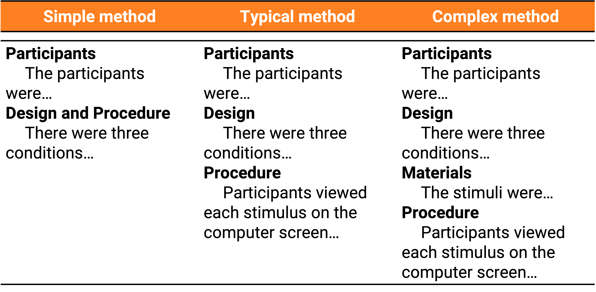
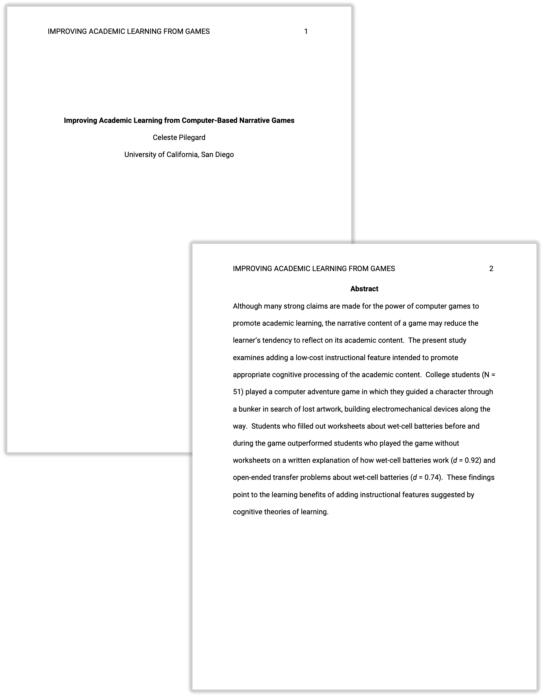
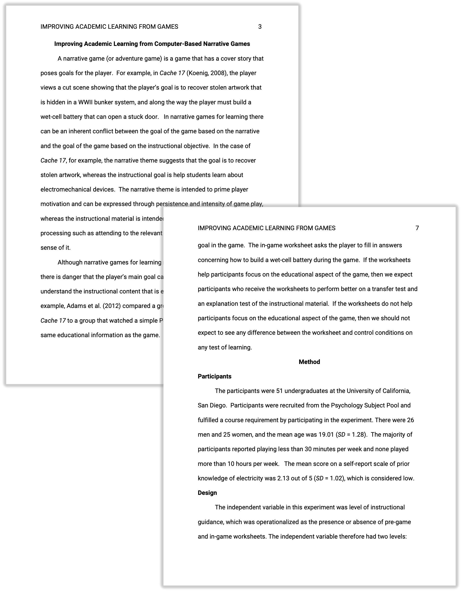
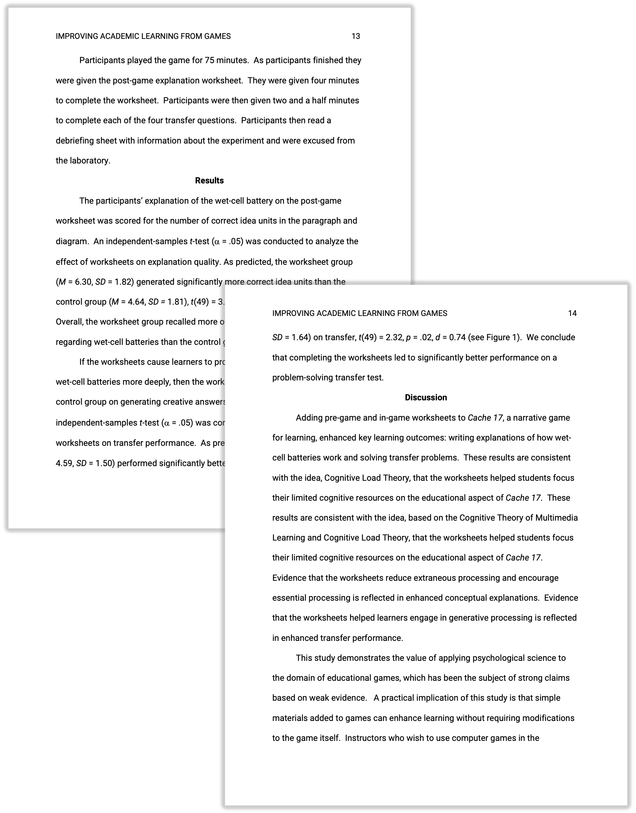
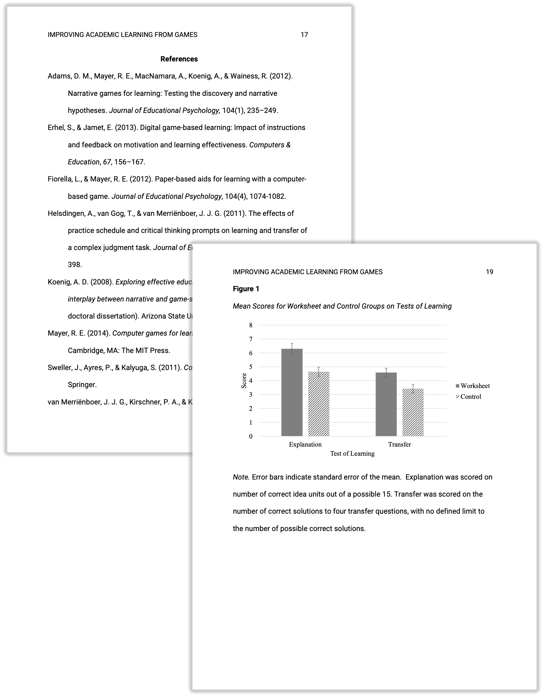
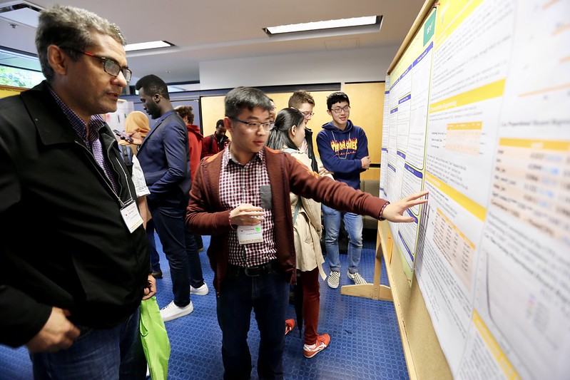
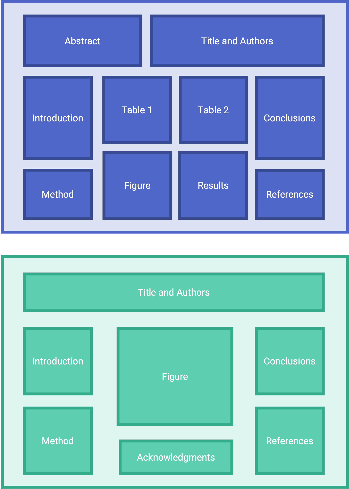

| APA style feature | Scientific value or assumption |
|---|---|
| There are very few direct quotations of other researchers. | The phenomena and theories of psychology are objective and do not depend on the specific words a particular researcher used to describe them. |
| Criticisms are directed at other researchers’ work but not at them personally. | The focus of scientific research is on drawing general conclusions about the world, not on the personalities of particular researchers. |
| There are many references and reference citations. | Scientific research is a large-scale collaboration among many researchers. |
| Empirical research reports are organized with specific sections in a fixed order. | There is an ideal approach to conducting empirical research in psychology (even if this ideal is not always achieved in actual research). |
| Researchers tend to “hedge” their conclusions, e.g., “The results suggest that…” | Scientific knowledge is tentative and always subject to revision based on new empirical results. |
11 Presenting Your Research
Research is complete only when the results are shared with the scientific community.
— American Psychological Association
Imagine that you have identified an interesting research question, reviewed the relevant literature, designed and conducted an empirical study, analyzed the data, and drawn your conclusions. There is still one more step in the process of conducting scientific research. It is time to add your research to the literature so that others can learn from it and build on it. Remember that science is a social process—a large-scale collaboration among many researchers distributed across space and time. For this reason, it could be argued that unless you make your research public in some form, you are not really engaged in science at all.
In this chapter, we look at how to present your research effectively. We begin with a discussion of American Psychological Association (APA) style—the primary approach to writing taken by researchers in psychology and related fields. Then we consider how to write an APA-style empirical research report. Finally, we look at some of the many other ways in which researchers present their work, including review and theoretical articles, theses and other student papers, and talks and posters at professional meetings.
11.1 American Psychological Association (APA) Style
LEARNING OBJECTIVES
- Define APA style and list several of its most important characteristics.
- Identify three levels of APA style and give examples of each.
- Identify multiple sources of information about APA style.
What Is APA Style?
APA style is a set of guidelines for writing in psychology and related fields. These guidelines are set down in the Publication Manual of the American Psychological Association (american2020publication?). The Publication Manual originated in 1929 as a short journal article that provided basic standards for preparing manuscripts to be submitted for publication (bentley1929instructions?). It was later expanded and published as a book by the association and is now in its seventh edition. The primary purpose of APA style is to facilitate scientific communication by promoting clarity of expression and by standardizing the organization and content of research articles and book chapters. It is easier to write about research when you know what information to present, the order in which to present it, and even the style in which to present it. Likewise, it is easier to read about research when it is presented in familiar and expected ways.
APA style is best thought of as a “genre” of writing that is appropriate for presenting the results of psychological research—especially in academic and professional contexts. It is not synonymous with “good writing” in general. You would not write a literary analysis for an English class, even if it were based on psychoanalytic concepts, in APA style. You would write it in Modern Language Association (MLA) style instead. And you would not write a newspaper article, even if it were about a new breakthrough in behavioral neuroscience, in APA style. You would write it in Associated Press (AP) style instead. At the same time, you would not write an empirical research report in MLA style, in AP style, or in the style of a romance novel, an e-mail to a friend, or a shopping list. You would write it in APA style. Part of being a good writer in general is adopting a style that is appropriate to the writing task at hand, and for writing about psychological research, this is APA style.
The Levels of APA Style
Because APA style consists of a large number and variety of guidelines—the Publication Manual is over 300 pages long—it can be useful to think about it in terms of three basic levels. The first is the overall organization of an article (which is covered in Chapter 2 of the Publication Manual). Empirical research reports, in particular, have several distinct sections that always appear in the same order:
- Title page. Presents the article title and author names and affiliations.
- Abstract. Summarizes the research.
- Introduction. Describes previous research and the rationale for the current study.
- Method. Describes how the study was conducted.
- Results. Describes the results of the study.
- Discussion. Summarizes the study and discusses its implications.
- References. Lists the references cited throughout the article.
The second level of APA style can be referred to as high-level style (covered in Chapters 3-6 of the Publication Manual), which includes guidelines for the clear expression of ideas. There are two important themes here. One is that APA-style writing is formal rather than informal. It adopts a tone that is appropriate for communicating with professional colleagues—other researchers and practitioners—who share an interest in the topic. Beyond this shared interest, however, these colleagues are not necessarily similar to the writer or to each other. A graduate student in California might be writing an article that will be read by a young psychotherapist in New York City and a respected professor of psychology in Tokyo. Thus formal writing avoids slang, contractions, pop culture references, humor, and other elements that would be acceptable in talking with a friend or in writing informally.
The second theme of high-level APA style is that it is straightforward. This means that it communicates ideas as simply and clearly as possible, putting the focus on the ideas themselves and not on how they are communicated. Thus APA-style writing minimizes literary devices such as metaphor, imagery, irony, suspense, and so on. Again, humor is kept to a minimum. Sentences are short and direct. Technical terms must be used, but they are used to improve communication, not simply to make the writing sound more “scientific.” For example, if participants immersed their hands in a bucket of ice water, it is better just to write this than to write that they “were subjected to a pain-inducement apparatus.” At the same time, however, there is no better way to communicate that a between-subjects design was used than to use the term “between-subjects design.”
APA Style and the Values of Psychology
Robert Madigan and his colleagues have argued that APA style has a purpose that often goes unrecognized (madigan1995language?). Specifically, it promotes psychologists’ scientific values and assumptions. From this perspective, many features of APA style that at first seem arbitrary actually make good sense. Following are several features of APA-style writing and the scientific values or assumptions they reflect.
Another important element of high-level APA style is the avoidance of language that is biased against particular groups. This is not only to avoid offending people—why would you want to offend people who are interested in your work?—but also for the sake of scientific objectivity and accuracy. For example, the term sexual orientation should be used instead of sexual preference because people do not generally experience their orientation as a “preference,” nor is it as easily changeable as this term suggests (herek1991avoiding?).
The general principles for avoiding biased language are fairly simple. First, be sensitive to labels by avoiding terms that are offensive or have negative connotations. This includes terms that identify people with a disorder or other problem they happen to have. For example, patients with schizophrenia is better than schizophrenics. Second, use more specific terms rather than more general ones. For example, Mexican Americans is better than Hispanics if everyone in the group is, in fact, Mexican American. Third, avoid objectifying research participants. Instead, acknowledge their active contribution to the research. For example, “The students completed the questionnaire” is better than “The subjects were administered the questionnaire.” Note that this principle also makes for clearer, more engaging writing. Table @ref(tab:bias) shows several more examples that follow these general principles.
| Instead of… | Use… |
|---|---|
| man, men | men and women, people |
| firemen | firefighters |
| homosexuals, gays, bisexuals | lesbians, gay men, bisexual men, bisexual people |
| minority | specific group label (e.g., African American) |
| neurotics | people scoring high in neuroticism |
| special children | children with learning disabilities |
A previous edition of the Publication Manual strongly discouraged the use of the term subjects (except for nonhumans) and strongly encouraged the use of participants instead. The current edition, however, acknowledges that subjects can still be appropriate in referring to human participants in areas in which it has traditionally been used (e.g., basic memory research). But it also encourages the use of more specific terms when possible: college students, children, respondents, and so on.
The third level of APA style can be referred to as low-level style (which is covered in Chapter 6 through Chapter 10 of the Publication Manual.) Low-level style includes all the specific guidelines pertaining to spelling, grammar, references and reference citations, numbers and statistics, figures and tables, and so on. There are so many low-level guidelines that even experienced professionals need to consult the Publication Manual from time to time. Table @ref(tab:errors) contains some of the most common types of APA style errors based on an analysis of manuscripts submitted to one professional journal over a 6-year period (onwuegbuzie2010evidence?). These errors were committed by professional researchers but are probably similar to those that students commit the most too. See also Note “Online APA Style Resources” in this section and, of course, the Publication Manual itself.
| Error type | Example |
|---|---|
| 1. Use of numbers | Failing to use numerals for 10 and above |
| 2. Hyphenation | Failing to hyphenate compound adjectives that precede a noun (e.g., “role playing technique” should be “role-playing technique”) |
| 3. Use of et al. | Failing to use it in a reference |
| 4. Headings | Not capitalizing headings correctly |
| 5. Use of since | Using since to mean because |
| 6. Tables and figures | Not formatting them in APA style; repeating information that is already given in the text |
| 7. Use of commas | Failing to use a comma before and or or in a series of three or more elements |
| 8. Use of abbreviations | Failing to spell out a term completely before introducing an abbreviation for it |
| 9. Spacing | Not consistently double-spacing between lines |
| 10. Use of & in references | Using & in the text or and in parentheses |
Online APA Style Resources
The best source of information on APA style is the Publication Manual itself. However, there are also many good websites on APA style, which do an excellent job of presenting the basics for beginning researchers. Here are two of them.
APA Style: http://www.apastyle.apa.org
Purdue Online Writing Lab: https://owl.purdue.edu/owl/research_and_citation/apa_style/apa_style_introduction.html
APA-Style References and Citations
Because science is a large-scale collaboration among researchers, references to the work of other researchers are extremely important. Their importance is reflected in the extensive and detailed set of rules for formatting and using them.
References
At the end of an APA-style article or book chapter is a list that contains references to all the works cited in the text (and only the works cited in the text). The reference list begins on its own page, with the heading “References” centered and bolded. The references themselves are then listed alphabetically according to the last names of the first named author for each citation. (As in the rest of an APA-style manuscript, everything is double-spaced.) Many different kinds of works might be cited in APA-style articles and book chapters, including magazine articles, websites, government documents, and even television shows. Of course, you should consult the Publication Manual or Online APA Style Resources for details on how to format them. Here we will focus on formatting references for the three most common kinds of works cited in APA style: journal articles, books, and book chapters.
Journal Articles
For journal articles, the generic format for a reference is as follows:
Author, A. A., Author, B. B., & Author, C. C. (year). Title of article. Title of Journal, xx, pp–pp. https://doi.org/xx.xxxxxxxxxx
Here is a concrete example:
Adair, J. G., & Vohra, N. (2003). The explosion of knowledge, references, and citations: Psychology’s unique response to a crisis. American Psychologist, 58, 15–23. https://doi.org/10.1037/0003-066X.58.1.15
There are several things to notice here. The reference includes a hanging indent. That is, the first line of the reference is not indented but all subsequent lines are. The authors’ names appear in the same order as on the article, which reflects the authors’ relative contributions to the research. Only the authors’ last names and initials appear, and the names are separated by commas with an ampersand (&) between the last two. This is true even when there are only two authors. Only the first word of the article title is capitalized. The only exceptions are for words that are proper nouns or adjectives (e.g., “Freudian”) or if there is a subtitle, in which case the first word of the subtitle is also capitalized. In the journal title, however, all the important words are capitalized. The journal title and volume number are italicized. At the very end of the reference is the digital object identifier (DOI), which provides a permanent link to the location of the article on the Internet. Include this if it is available. It can generally be found in the record for the item on an electronic database (e.g., PsycINFO) and is usually displayed on the first page of the published article.
Books
For a book, the generic format and a concrete example are as follows:
Author, A. A. (year). Title of book. Location: Publisher.
Milgram, S. (1974). Obedience to authority: An experimental view. New York, NY: Harper & Row.
Book Chapters
For a chapter in an edited book, the generic format and a concrete example are as follows:
Author, A. A., Author, B. B., & Author, C. C. (year). Title of chapter. In A. A. Editor, B. B. Editor, & C. C. Editor (Eds.), Title of book (pp. xxx–xxx). Location: Publisher.
Lilienfeld, S. O., & Lynn, S. J. (2003). Dissociative identity disorder: Multiple personalities, multiple controversies. In S. O. Lilienfeld, S. J. Lynn, & J. M. Lohr (Eds.), Science and pseudoscience in clinical psychology (pp. 109–142). New York, NY: Guilford Press.
Notice that references for books and book chapters are similar to those for journal articles, but there are several differences too. For an edited book, the names of the editors appear with their first and middle initials followed by their last names (not the other way around)—with the abbreviation “Eds.” (or “Ed.,” if there is only one) appearing in parentheses immediately after the final editor’s name. Only the first word of a book title is capitalized (with the exceptions noted for article titles), and the entire title is italicized. For a chapter in an edited book, the page numbers of the chapter appear in parentheses after the book title with the abbreviation “pp.” Finally, both formats end with the location of publication and the publisher, separated by a colon.
Reference Citations
When you refer to another researcher’s idea, you must include a reference citation (in the text) to the work in which that idea originally appeared and a full reference to that work in the reference list. What counts as an idea that must be cited? In general, this includes phenomena discovered by other researchers, theories they have developed, hypotheses they have derived, and specific methods they have used (e.g., specific questionnaires or stimulus materials). Citations should also appear for factual information that is not common knowledge so that other researchers can check that information for themselves. For example, in an article on the effect of cell phone usage on driving ability, the writer might cite official statistics on the number of cell phone–related accidents that occur each year. Among the ideas that do not need citations are widely shared methodological and statistical concepts (e.g., between-subjects design, t test) and statements that are so broad that they would be difficult for anyone to argue with (e.g., “Working memory plays a role in many daily activities.”). Be careful, though, because “common knowledge” about human behavior is often incorrect. Therefore, when in doubt, find an appropriate reference to cite or remove the questionable assertion.
When you cite a work in the text of your manuscript, there are two ways to do it. Both include only the last names of the authors and the year of publication. The first method is to use the authors’ last names in the sentence (with no first names or initials) followed immediately by the year of publication in parentheses. Here are some examples:
Burger (2008) conducted a replication of Milgram’s (1963) original obedience study.
García-Rodicio and Sánchez (2014) studied the persistence of students’ misconceptions.
Notice several things. First, the authors’ names are treated grammatically as names of people, not as things. It is better to write “a replication of Milgram’s (1963) study” than “a replication of Milgram (1963).” Second, when there are two authors the names are not separated by commas. Third, the word and (rather than an ampersand) is used to join the authors’ names. Fourth, the year follows immediately after the final author’s name. An additional point, which is not illustrated in these examples but is illustrated in the sample paper later in this chapter, is that the year only needs to be included the first time a particular work is cited in the same paragraph.
The second way to cite an article or a book chapter is parenthetically—including the authors’ last names and the year of publication in parentheses following the idea that is being credited. Here are some examples:
People can be surprisingly obedient to authority figures (Burger, 2008; Milgram, 1963).
Informing students of common misconceptions may not be sufficient to repair misunderstandings (García-Rodicio & Sánchez, 2014).
One thing to notice about such parenthetical citations is that they are often placed at the end of the sentence, which minimizes their disruption to the flow of that sentence. In contrast to the first way of citing a work, this way always includes the year—even when the citation is given multiple times in the same paragraph. Notice also that when there are multiple citations in the same set of parentheses, they are organized alphabetically by the name of the first author and separated by semicolons.
There are no strict rules for deciding which of the two citation styles to use. Most articles and book chapters contain a mixture of the two. In general, however, the first approach works well when you want to emphasize the person who conducted the research—for example, if you were comparing the theories of two prominent researchers. It also works well when you are describing a particular study in detail. The second approach works well when you are discussing a general idea and especially when you want to include multiple citations for the same idea.
The third most common error in Table @ref(tab:errors) has to do with the use of et al. This is an abbreviation for the Latin term et alia, which means “and others.” In APA style, if an article or a book chapter has more than two authors, your in-text citation should use the first author’s name followed by “et al.” Here are some examples:
Although many people believe that women are more talkative than men, Mehl et al. (2007) found essentially no difference in the number of words spoken by male and female college students.
There is a strong positive correlation between the number of daily hassles and the number of symptoms people experience (Kanner et al., 1981).
Notice that there is no comma between the first author’s name and “et al.” Notice also that there is no period after “et” but there is one after “al.” This is because “et” is a complete word and “al.” is an abbreviation for the word alia.
KEY TAKEAWAYS
- APA style is a set of guidelines for writing in psychology. It is the genre of writing that psychologists use to communicate about their research with other researchers and practitioners.
- APA style can be seen as having three levels. There is the organization of a research article, the high-level style that includes writing in a formal and straightforward way, and the low-level style that consists of many specific rules of grammar, spelling, formatting of references, and so on.
- References and reference citations are an important part of APA style. There are specific rules for formatting references and for citing them in the text of an article.
EXERCISES
- Practice: Find a description of a research study in a popular magazine, newspaper, blog, or website. Then identify five specific differences between how that description is written and how it would be written in APA style.
- Practice: Find and correct the errors in the following fictional APA-style references and citations.
- Walters, F. T., and DeLeon, M. (2010). Relationship Between Intrinsic Motivation and Accuracy of Academic Self-Evaluations Among High School Students. Educational Psychology Quarterly, 23, 234–256.
- Moore, Lilia S. (2007). Ethics in survey research. In M. Williams & P. L. Lee (eds.), Ethical Issues in Psychology (pp. 120–156), Boston, Psychological Research Press.
- Vang, C., Dumont, L. S., and Prescott, M. P. found that left-handed people have a stronger preference for abstract art than right-handed people (2006).
- This result has been replicated several times (Williamson, 1998; Pentecost & Garcia, 2006; Armbruster, 2011)
11.2 Writing a Research Report in American Psychological Association (APA) Style
LEARNING OBJECTIVES
- Identify the major sections of an APA-style research report and the basic contents of each section.
- Plan and write an effective APA-style research report.
In this section, we look at how to write an APA-style empirical research report, an article that presents the results of one or more new studies. Recall that the standard sections of an empirical research report provide a kind of outline. Here we consider each of these sections in detail, including what information it contains, how that information is formatted and organized, and tips for writing each section. At the end of this section is a sample APA-style research report that illustrates many of these principles.
Sections of a Research Report
Title Page and Abstract
An APA-style research report begins with a title page. The title is centered and bolded in the upper half of the page, with each important word capitalized. The title should clearly and concisely (in about 12 words or fewer) communicate the primary variables and research questions. This sometimes requires a main title followed by a subtitle that elaborates on the main title, in which case the main title and subtitle are separated by a colon. Here are some titles from issues of professional journals published by the American Psychological Association.
- Sex Differences in Coping Styles and Implications for Depressed Mood
- Effects of Aging and Divided Attention on Memory for Items and Their Contexts
- Computer-Assisted Cognitive Behavioral Therapy for Child Anxiety: Results of a Randomized Clinical Trial
- Virtual Driving and Risk Taking: Do Racing Games Increase Risk-Taking Cognitions, Affect, and Behavior?
Below the title are the authors’ names and, on the next line, their institutional affiliation—the university or other institution where the authors worked when they conducted the research. As we have already seen, the authors are listed in an order that reflects their contribution to the research. When multiple authors have made equal contributions to the research, they often list their names alphabetically or in a randomly determined order.
It’s Soooo Cute!
How Informal Should an Article Title Be?
In some areas of psychology, the titles of many empirical research reports are informal in a way that is perhaps best described as “cute.” They usually take the form of a play on words or a well-known expression that relates to the topic under study. Here are some examples from the Journal of Personality and Social Psychology.
- “Let’s Get Serious: Communicating Commitment in Romantic Relationships”
- “Through the Looking Glass Clearly: Accuracy and Assumed Similarity in Well-Adjusted Individuals’ First Impressions”
- “Don’t Hide Your Happiness! Positive Emotion Dissociation, Social Connectedness, and Psychological Functioning”
- “Forbidden Fruit: Inattention to Attractive Alternatives Provokes Implicit Relationship Reactance”
Individual researchers differ quite a bit in their preference for such titles. Some use them regularly, while others never use them. What might be some of the pros and cons of using cute article titles?
For articles that are being submitted for publication, the title page also includes an author note that lists the authors’ full institutional affiliations, any acknowledgments the authors wish to make to agencies that funded the research or to colleagues who commented on it, and contact information for the authors. For student papers that are not being submitted for publication—including theses—author notes are generally not necessary.
The abstract is a summary of the study. It is the second page of the manuscript and is headed with the bolded word Abstract. The first line is not indented. The abstract presents the research question, a summary of the method, the basic results, and the most important conclusions. Because the abstract is usually limited to about 200 words, it can be a challenge to write a good one.
Introduction
The introduction begins on the third page of the manuscript. The heading at the top of this page is the full title of the manuscript, bolded and with each important word capitalized as on the title page. The introduction includes three distinct subsections, although these are typically not identified by separate headings. The opening introduces the research question and explains why it is interesting, the literature review discusses relevant previous research, and the closing restates the research question and comments on the method used to answer it.
The Opening
The opening, which is usually a paragraph or two in length, introduces the research question and explains why it is interesting. To capture the reader’s attention, start with general observations about the topic under study, expressed in ordinary language (not technical jargon)—observations that are about people and their behavior (not about researchers or their research; (bem2003writing?)). For example, this would be a poor way to begin a research report:
Thomas and McDaniel (2007) and Thiede et al. (2011), showed that calibration of metacomprehension is influenced by study-test congruency.
Here’s another poor opener (wrong tone; too flowery):
Over the course of one’s academic trials, it is of utmost consequence to make provision for the scrutiny of one’s own aptitude– to wit, what shall constitute the appraisal, and what arduousness will bear out?
The following would be much better:
When students prepare for an upcoming exam, it may benefit them to take into consideration the style of the expected test. Consider the following students: Student A always focuses on rote memorization, regardless of exam type; Student B focuses on either rote memorization or conceptual understanding depending on their expectations of the exam.
After capturing the reader’s attention, the opening should go on to introduce the research question and explain why it is interesting. Will the answer fill a gap in the literature? Will it provide a test of an important theory? Does it have practical implications? Giving readers a clear sense of what the research is about and why they should care about it will motivate them to continue reading the literature review—and will help them make sense of it.
Breaking the Rules
Researcher Larry Jacoby reported several studies showing that a word that people see or hear repeatedly can seem more familiar even when they do not recall the repetitions—and that this tendency is especially pronounced among older adults. He opened his article with the following humorous anecdote (Jacoby, 1999).
A friend whose mother is suffering symptoms of Alzheimer’s disease (AD) tells the story of taking her mother to visit a nursing home, preliminary to her mother’s moving there. During an orientation meeting at the nursing home, the rules and regulations were explained, one of which regarded the dining room. The dining room was described as similar to a fine restaurant except that tipping was not required. The absence of tipping was a central theme in the orientation lecture, mentioned frequently to emphasize the quality of care along with the advantages of having paid in advance. At the end of the meeting, the friend’s mother was asked whether she had any questions. She replied that she only had one question: “Should I tip?” (p. 3).
Although both humor and personal anecdotes are generally discouraged in APA-style writing, this example is a highly effective way to start because it both engages the reader and provides an excellent real-world example of the topic under study.
The Literature Review
Immediately after the opening comes the literature review, which describes relevant previous research on the topic and can be anywhere from several paragraphs to several pages in length. However, the literature review is not simply a list of past studies. Instead, it constitutes a kind of argument for why the research question is worth addressing. By the end of the literature review, readers should be convinced that the research question makes sense and that the present study is a logical next step in the ongoing research process.
Like any effective argument, the literature review must have some kind of structure. For example, it might begin by describing a phenomenon in a general way along with several studies that demonstrate it, then describing two or more competing theories of the phenomenon, and finally presenting a hypothesis to test one or more of the theories. Or it might describe one phenomenon, then describe another phenomenon that seems inconsistent with the first one, then propose a theory that resolves the inconsistency, and finally present a hypothesis to test that theory. In applied research, it might describe a phenomenon or theory, then describe how that phenomenon or theory applies to some important real-world situation, and finally suggest a way to test whether it does, in fact, apply to that situation.
Looking at the literature review in this way emphasizes a few things. First, it is extremely important to start with an outline of the main points that you want to make, organized in the order that you want to make them. The basic structure of your argument, then, should be apparent from the outline itself. Second, it is important to emphasize the structure of your argument in your writing. One way to do this is to begin the literature review by summarizing your argument even before you begin to make it. “In this article, I will describe two apparently contradictory phenomena, present a new theory that has the potential to resolve the apparent contradiction, and finally present a novel hypothesis to test the theory.” Another way is to open each paragraph with a sentence that summarizes the main point of the paragraph and links it to the preceding points. These opening sentences provide the “transitions” that many beginning researchers have difficulty with. Instead of beginning a paragraph by launching into a description of a previous study, such as “Williams (2004) found that…,” it is better to start by indicating something about why you are describing this particular study. Here are some simple examples:
Another example of this phenomenon comes from the work of Williams (2004).
Williams (2004) offers one explanation of this phenomenon.
An alternative perspective has been provided by Williams (2004).
We used a method based on the one used by Williams (2004).
Finally, remember that your goal is to construct an argument for why your research question is interesting and worth addressing—not necessarily why your favorite answer to it is correct. In other words, your literature review must be balanced. If you want to emphasize the generality of a phenomenon, then of course you should discuss various studies that have demonstrated it. However, if there are other studies that have failed to demonstrate it, you should discuss them too. Or if you are proposing a new theory, then of course you should discuss findings that are consistent with that theory. However, if there are other findings that are inconsistent with it, again, you should discuss them too. It is acceptable to argue that the balance of the research supports the existence of a phenomenon or is consistent with a theory (and that is usually the best that researchers in psychology can hope for), but it is not acceptable to ignore contradictory evidence. Besides, a large part of what makes a research question interesting is uncertainty about its answer.
The Closing
The closing of the introduction—typically the final paragraph or two—usually includes two important elements. The first is a clear statement of the main research question or hypothesis. This statement tends to be more formal and precise than in the opening and is often expressed in terms of operational definitions of the key variables. The second is a brief overview of the method and some comment on its appropriateness. Here, for example, is how (darley1968bystander?) concluded the introduction to their classic article on the bystander effect:
These considerations lead to the hypothesis that the more bystanders to an emergency, the less likely, or the more slowly, any one bystander will intervene to provide aid. To test this proposition it would be necessary to create a situation in which a realistic “emergency” could plausibly occur. Each subject should also be blocked from communicating with others to prevent his getting information about their behavior during the emergency. Finally, the experimental situation should allow for the assessment of the speed and frequency of the subjects’ reaction to the emergency. The experiment reported below attempted to fulfill these conditions (p. 378).
Thus the introduction leads smoothly into the next major section of the article—the method section.
Method
The method section is where you describe how you conducted your study. An important principle for writing a method section is that it should be clear and detailed enough that other researchers could replicate the study by following your “recipe.” This means that it must describe all the important elements of the study—basic demographic characteristics of the participants, how they were recruited, whether they were randomly assigned, how the variables were manipulated or measured, how counterbalancing was accomplished, and so on. At the same time, it should avoid irrelevant details such as the fact that the study was conducted in Classroom 37B of the Industrial Technology Building or that the questionnaire was double-sided and completed using mechanical pencils.
The method section begins immediately after the introduction ends with the heading “Method” (not “Methods”) centered on the page. Immediately after this is the subheading “Participants,” left justified and in italics. The participants subsection indicates how many participants there were, the number of women and men, some indication of their age, other demographics that may be relevant to the study, and how they were recruited, including any incentives given for participation.

After the participants section, the structure can vary a bit. Figure @ref(fig:method) shows three common approaches. In the first, the participants section is followed by a design and procedure subsection, which describes the rest of the method. This works well for methods that are relatively simple and can be described adequately in a few paragraphs. In the second approach, the participants section is followed by separate design and procedure subsections. This works well when both the design and the procedure are relatively complicated and each requires multiple paragraphs.
What is the difference between design and procedure? The design of a study is its overall structure. What were the independent and dependent variables? Was the independent variable manipulated, and if so, was it manipulated between or within subjects? How were the variables operationally defined? The procedure is how the study was carried out. It often works well to describe the procedure in terms of what the participants did rather than what the researchers did. For example, the participants gave their informed consent, read a set of instructions, completed a block of four practice trials, completed a block of 20 test trials, completed two questionnaires, and were debriefed and excused.
In the third basic way to organize a method section, the participants and design subsections are followed by a materials subsection before the procedure subsections. This works well when there are complicated materials to describe. This might mean multiple questionnaires, written vignettes that participants read and respond to, perceptual stimuli, and so on. This subsection may have a further level of subsections with headings like “Questionnaires,” “Stimuli,” and so on.
Results
The results section is where you present the main results of the study, including the results of the statistical analyses. Although it does not include the raw data—individual participants’ responses or scores—researchers should save their raw data and make them available to other researchers who request them. Some journals now make the raw data available online.
Although there are no standard subsections, it is still important for the results section to be logically organized. Typically it begins with certain preliminary issues. One is whether any participants or responses were excluded from the analyses and why. The rationale for excluding data should be described clearly so that other researchers can decide whether it is appropriate. A second preliminary issue is how multiple responses were combined to produce the primary variables in the analyses. For example, if participants rated the attractiveness of 20 stimulus people, you might have to explain that you began by computing the mean attractiveness rating for each participant. Or if they recalled as many items as they could from study list of 20 words, did you count the number correctly recalled, compute the percentage correctly recalled, or perhaps compute the number correct minus the number incorrect? A third preliminary issue is the reliability of the measures. This is where you would present test-retest correlations, Cronbach’s α, or other statistics to show that the measures are consistent across time and across items. A final preliminary issue is whether the manipulation was successful. This is where you would report the results of any manipulation checks.
The results section should then tackle the primary research questions, one at a time. Again, there should be a clear organization. One approach would be to answer the most general questions and then proceed to answer more specific ones. Another would be to answer the main question first and then to answer secondary ones. Regardless, (bem2003writing?) suggests the following basic structure for discussing each new result:
- Remind the reader of the research question.
- Give the answer to the research question in words.
- Present the relevant statistics.
- Qualify the answer if necessary.
- Summarize the result.
Notice that only Step 3 necessarily involves numbers. The rest of the steps involve presenting the research question and the answer to it in words. In fact, the basic results should be clear even to a reader who skips over the numbers.
Discussion
The discussion is the last major section of the research report. Discussions usually consist of some combination of the following elements:
- Summary of the research
- Theoretical implications
- Practical implications
- Limitations
- Suggestions for future research
The discussion typically begins with a summary of the study that provides a clear answer to the research question. In a short report with a single study, this might require no more than a sentence. In a longer report with multiple studies, it might require a paragraph or even two. The summary is often followed by a discussion of the theoretical implications of the research. Do the results provide support for any existing theories? If not, how can they be explained? Although you do not have to provide a definitive explanation or detailed theory for your results, you at least need to outline one or more possible explanations. In applied research—and often in basic research—there is also some discussion of the practical implications of the research. How can the results be used, and by whom, to accomplish some real-world goal?
The theoretical and practical implications are often followed by a discussion of the study’s limitations. Perhaps there are problems with its internal or external validity. Perhaps the manipulation was not very effective or the measures not very reliable. Perhaps there is some evidence that participants did not fully understand their task or that they were suspicious of the intent of the researchers. Now is the time to discuss these issues and how they might have affected the results. But do not overdo it. All studies have limitations, and most readers will understand that a different sample or different measures might have produced different results. Unless there is good reason to think they would have, however, there is no reason to mention these routine issues. Instead, pick two or three limitations that seem like they could have influenced the results, explain how they could have influenced the results, and suggest ways to deal with them.
Most discussions end with some suggestions for future research. If the study did not satisfactorily answer the original research question, what will it take to do so? What new research questions has the study raised? This part of the discussion, however, is not just a list of new questions. It is a discussion of two or three of the most important unresolved issues. This means identifying and clarifying each question, suggesting some alternative answers, and even suggesting ways they could be studied.
Finally, some researchers are quite good at ending their articles with a sweeping or thought-provoking conclusion. (darley1968bystander?) for example, ended their article on the bystander effect by discussing the idea that whether people help others may depend more on the situation than on their personalities. Their final sentence is, “If people understand the situational forces that can make them hesitate to intervene, they may better overcome them” (p. 383). However, this kind of ending can be difficult to pull off. It can sound overreaching or just banal and end up detracting from the overall impact of the article. It is often better simply to end when you have made your final point (although you should avoid ending on a limitation).
References
The references section begins on a new page with the heading “References” centered and bolded at the top of the page. All references cited in the text are then listed in the format presented earlier. They are listed alphabetically by the last name of the first author. If two sources have the same first author, they are listed alphabetically by the last name of the second author. If all the authors are the same, then they are listed chronologically by the year of publication. Everything in the reference list is double-spaced both within and between references.
Appendixes, Tables, and Figures
Appendixes, tables, and figures come after the references. An appendix is appropriate for supplemental material that would interrupt the flow of the research report if it were presented within any of the major sections. An appendix could be used to present lists of stimulus words, questionnaire items, detailed descriptions of special equipment or unusual statistical analyses, or references to the studies that are included in a meta-analysis. Each appendix begins on a new page. If there is only one, the heading is “Appendix,” centered at the top of the page. If there is more than one, the headings are “Appendix A,” “Appendix B,” and so on, and they appear in the order they were first mentioned in the text of the report.
What about tables and figures? Tables and figures are both used to present results. Figures can also be used to illustrate theories (e.g., in the form of a flowchart), display stimuli, outline procedures, and present many other kinds of information. The traditional way to present tables and figures is at the end of the paper, after the references and any appendixes, with each table and figure appearing on its own page. This is still an acceptable way to present tables and figures. However, starting in the seventh edition of the Publication Manual, APA style now permits embedding tables and figures in text near the first time they are mentioned. Tables are numbered in the order that they are first mentioned in the text (“Table 1,” “Table 2,” and so on). Figures are numbered the same way (“Figure 1,” “Figure 2,” and so on). A brief explanatory title, with the important words capitalized, appears above each table and figure. More details on preparing APA-style tables and figures are presented later in the book.
Professional or Student Paper?
APA formatting guidelines have traditionally been tailored for professional papers that resesarchers submit for publication. Starting in the seventh edition of the Publication Manual released in 2020, the APA now offers slightly different formatting guidelines for student papers that aren’t intended for publication. The main differences are as follows:
- Title page: Professional papers list the title, authors, and affiliations. Student papers add course information such as class name, instructor name, and due date.
- Author note: Not required for student papers.
- Running head: Not required for student papers unless required by the instructor. Page numbers are required for student papers.
- Abstract: Not required for student papers unless required by the instructor.
- Keywords: Not required for student papers unless required by the instructor.
Many instructors still prefer the professional format; consult your assignment guidelines. You can view sample professonal and student papers on the APA website.
Sample APA-Style Research Report
Figure @ref(fig:sample1), Figure @ref(fig:sample2), Figure @ref(fig:sample3), and Figure @ref(fig:sample4) show some sample pages from an APA-style empirical research report. The main purpose of these figures is to illustrate the basic organization and formatting of an APA-style empirical research report, although many high-level and low-level style conventions can be seen here too.
Note: The pages below are adapted from the preprint of a manuscript published in Contemporary Educatianal Psychology (pilegard2016improving?). Changes, including deletions and distortions, were made for utility’s sake in the pages below. This version should not be treated as an academic source.




KEY TAKEAWAYS
- An APA-style empirical research report consists of several standard sections. The main ones are the abstract, introduction, method, results, discussion, and references.
- The introduction consists of an opening that presents the research question, a literature review that describes previous research on the topic, and a closing that restates the research question and comments on the method. The literature review constitutes an argument for why the current study is worth doing.
- The method section describes the method in enough detail that another researcher could replicate the study. At a minimum, it consists of a participants subsection and a design and procedure subsection.
- The results section describes the results in an organized fashion. Each primary result is presented in terms of statistical results but also explained in words.
- The discussion typically summarizes the study, discusses theoretical and practical implications and limitations of the study, and offers suggestions for further research.
EXERCISES
- Practice: Look through an issue of a general interest professional journal (e.g., Psychological Science). Read the opening of the first five articles and rate the effectiveness of each one from 1 (very ineffective) to 5 (very effective). Write a sentence or two explaining each rating.
- Practice: Find a recent article in a professional journal and identify where the opening, literature review, and closing of the introduction begin and end.
- Practice: Find a recent article in a professional journal and highlight in a different color each of the following elements in the discussion: summary, theoretical implications, practical implications, limitations, and suggestions for future research.
11.3 Other Presentation Formats
LEARNING OBJECTIVES
- List several ways that researchers in psychology can present their research and the situations in which they might use them.
- Describe how final manuscripts differ from copy manuscripts in American Psychological Association (APA) style.
- Describe the purpose of talks and posters at professional conferences.
- Prepare a short conference-style talk and simple poster presentation.
Writing an empirical research report in American Psychological Association (APA) style is only one way to present new research in psychology. In this section, we look at several other important ways.
Other Types of Manuscripts
The previous section focused on writing empirical research reports to be submitted for publication in a professional journal. However, there are other kinds of manuscripts that are written in APA style, many of which will not be submitted for publication elsewhere. Here we look at a few of them.
Review and Theoretical Articles
Recall that review articles summarize research on a particular topic without presenting new empirical results. When these articles present a new theory, they are often called theoretical articles. Review and theoretical articles are structured much like empirical research reports, with a title page, an abstract, references, appendixes, tables, and figures, and they are written in the same high-level and low-level style. Because they do not report the results of new empirical research, however, there is no method or results section. Of course, the body of the manuscript should still have a logical organization and include an opening that identifies the topic and explains its importance, a literature review that organizes previous research (identifying important relationships among concepts or gaps in the literature), and a closing or conclusion that summarizes the main conclusions and suggests directions for further research or discusses theoretical and practical implications. In a theoretical article, of course, much of the body of the manuscript is devoted to presenting the new theory. Theoretical and review articles are usually divided into sections, each with a heading that is appropriate to that section. The sections and headings can vary considerably from article to article (unlike in an empirical research report). But whatever they are, they should help organize the manuscript and make the argument clear.
Final Manuscripts
We have focused on the formatting of manuscripts that will be submitted to a professional journal for publication. These are referred to as copy manuscripts. Many features of a copy manuscript—consistent double-spacing, the running head, and the placement of tables and figures at the end—are intended to make it easier to edit and typeset on its way to publication. The published journal article looks quite different from the copy manuscript. For example, the title and author information, the abstract, and the beginning of the introduction generally appear on the same page rather than on separate pages. In contrast, other types of manuscripts are prepared by the author in their final form with no intention of submitting them for publication elsewhere. These are called final manuscripts and include dissertations, theses, and other student papers.
Final manuscripts can differ from copy manuscripts in a number of ways that make them easier to read. This can include variations in line spacing that improve readability—such as using single spacing for table titles and figure captions or triple spacing between major sections or around tables and figures. Dissertations and theses can differ from copy manuscripts in additional ways. They may have a longer abstract, a special acknowledgments page, a table of contents, and so on. For student papers, it is important to check with the course instructor about formatting specifics. In a research methods course, papers are often required to be written as though they were copy manuscripts being submitted for publication (see box Professional or Student Paper?).
Conference Presentations
One of the ways that researchers in psychology share their research with each other is by presenting it at professional conferences. (Although some professional conferences in psychology are devoted mainly to issues of clinical practice, we are concerned here with those that focus on research.) Professional conferences can range from small-scale events involving a dozen researchers who get together for an afternoon to large-scale events involving thousands of researchers who meet for several days. Although researchers attending a professional conference are likely to discuss their work with each other informally, there are two more formal types of presentation: oral presentations (“talks”) and posters. Presenting a talk or poster at a conference usually requires submitting an abstract of the research to the conference organizers in advance and having it accepted for presentation—although the peer review process is typically not as rigorous as it is for manuscripts submitted to a professional journal.
Professional Conferences
Following are links to the websites for several large national conferences in the United States and also for several conferences that feature the work of undergraduate students.
Large National Conferences
American Psychological Association Convention
Association for Psychological Science Conference
Society for Personality and Social Psychology Conference
Psychonomic Society Annual Meeting
Undergraduate Conferences
Carolinas Psychology Conference
Illowa Undergraduate Psychology Conference
L. Starling Reid Undergraduate Psychology Conference (University of Virginia)
Psychology Undergraduate Research Conference (UCLA)
Mid-America Undergraduate Psychology Research Conference
Oral Presentations
In an oral presentation, or “talk,” the presenter discusses their research in front of an audience of other researchers—usually with the help of a slide show. Talks usually last from 10 to 20 minutes, with the last few minutes reserved for questions from the audience. At larger conferences, talks are typically grouped into sessions lasting an hour or two in which all the talks are on the same general topic.
In preparing a talk, presenters should keep several general principles in mind. The first is that the number of slides should be no more than about one per minute of the talk. The second is that a talk is generally structured like an APA-style research report. There is a slide with the title and authors, a few slides to help provide the background, a few more to help describe the method, a few for the results, and a few for the conclusions. The third is that the presenter speak to the audience members in a conversational tone that is less formal than APA-style writing but more formal than a conversation with a friend. The slides should not be the focus of the presentation; they should act as visual aids. As such, they should present main points in bulleted lists or simple tables and figures.
Posters
Another way to present research at a conference is in the form of a poster. A poster is typically presented during a one- to two-hour poster session that takes place in a large room at the conference site. In a traditional poster session, presenters set up their posters on bulletin boards arranged around the room and stand near them. Other researchers then circulate through the room, read the posters, and talk to the presenters. In essence, poster sessions are a grown-up version of the school science fair. But there is nothing childish about them. Posters are used by professional researchers in all scientific disciplines and they are becoming increasingly common. At a recent American Psychological Society Conference, nearly 2,000 posters were presented across 16 separate poster sessions. Among the reasons posters are so popular is that they encourage meaningful interaction among researchers.

Although a poster can consist of several sheets of paper that are attached separately to the bulletin board, it is now more common for them to consist of a single large sheet of paper. Either way, the information is organized into distinct sections, including a title, author names and affiliations, an introduction, a method section, a results section, a discussion or conclusions section, references, and acknowledgments. Although posters can include an abstract, this may not be necessary because the poster itself is already a brief summary of the research. Figure @ref(fig:posterorg) shows two different ways that the information on a poster might be organized.

Given the conditions under which posters are often presented—for example, in crowded ballrooms where people are also eating, drinking, and socializing—they should be constructed so that they present the main ideas behind the research in as simple and clear a way as possible. The font sizes on a poster should be large—perhaps 72 points for the title and authors’ names and 28 points for the main text. The information should be organized into sections with clear headings, and text should be blocked into sentences or bulleted points rather than paragraphs. It is also better for it to be organized in columns and flow from top to bottom rather than to be organized in rows that flow across the poster. This makes it easier for multiple people to read at the same time without bumping into each other. Posters often include elements that add visual interest. Figures can be more colorful than those in an APA-style manuscript. Posters can also include copies of visual stimuli, photographs of the apparatus, or a simulation of participants being tested. They can also include purely decorative elements, although it is best not to overdo these.
Again, a primary reason that posters are such a popular way to present research is that they facilitate interaction among researchers. Many presenters immediately offer to describe their research to visitors and use the poster as a visual aid. At the very least, it is important for presenters to stand by their posters, greet visitors, offer to answer questions, and be prepared for questions and even the occasional critical comment. It is generally a good idea to have a more detailed write-up of the research available for visitors who want more information, to offer to send them a detailed write-up, or to provide contact information so that they can request more information later.
For more information on preparing and presenting both talks and posters, see the website of Psi Chi, the International Honor Society in Psychology: http://www.psichi.org/conventions/tips.aspx.
KEY TAKEAWAYS
- Research in psychology can be presented in several different formats. In addition to APA-style empirical research reports, there are theoretical and review articles; final manuscripts, including dissertations, theses, and student papers; and talks and posters at professional conferences.
- Talks and posters at professional conferences follow some APA style guidelines but are considerably less detailed than APA-style research reports. Their function is to present new research to interested researchers and facilitate further interaction among researchers.
EXERCISE
- Discussion: Do an Internet search using search terms such as psychology and poster to find three examples of posters that have been presented at conferences. Based on information in this chapter, what are the main strengths and main weaknesses of each poster?
11.4 Glossary
abstract
A short summary (approximately 200 words) of a research article. In an APA-style manuscript, the abstract appears on the second page.
APA style
A set of guidelines for writing in psychology and related fields that are set down in the Publication Manual of the American Psychological Association.
appendix
An optional section at the end of an APA-style manuscript used to present important supplemental material.
closing
The last paragraph or two of the introduction of an APA-style empirical research report. It restates the research question and comments on the method.
copy manuscript
A manuscript prepared according to APA style to be submitted for publication to a professional journal.
discussion
The final major section of an APA-style empirical research report. It typically includes a summary of the research, a discussion of theoretical and practical implications of the study, limitations of the study, and suggestions for future research.
empirical research report
A type of journal article in which the author reports on a new empirical research study.
final manuscript
A manuscript (such as a dissertation, thesis, or student paper) prepared in its final form that will not be submitted for publication in a professional journal.
high-level style
The second-most general level of APA style. It refers to general guidelines for the clear expression of ideas.
introduction
The first major section of an APA-style empirical research report. It typically includes an opening, a literature review, and a closing.
literature review
A written summary of previous research on a topic. It constitutes the bulk of the introduction of an APA-style empirical research report.
low-level style
The most specific level of APA style. It refers to the extensive rules pertaining to spelling, grammar, the formatting of reference and reference citations, the creation of tables and figures, and so on.
method section
The section of an APA-style empirical research report in which the method is described in detail. At minimum, it includes a participants subsection and a design and procedure subsections.
opening
The first paragraph or two of the introduction of an APA-style empirical report. It introduces the research question and explains why it is interesting.
oral presentation
A presentation at a professional conference in which presenters stand in front of an audience and tell them about their research, usually with the aid of a slide show. Such presentations, which are informally called “talks,” can last anywhere from 10 minutes to an hour.
organization
The most general level of APA style. It refers to the organization of a research article.
poster
A simple written presentation that is posted on a bulletin board during a poster session at a professional conference. The presenter stands near the poster and interacts with other researchers who are interested in the research.
poster session
A one- or two-hour session at a professional conference in which several researchers present their posters, often on related topics.
professional conference
A meeting at which researchers in a particular field gather to share their research.
Publication Manual of the American Psychological Association
A book published by the American Psychological Association that contains all the guidelines of APA style. It is often just referred to as the Publication Manual.
reference
The formatted publication information about a work that is cited in an APA-style article or book chapter. The references appear in a reference list at the end of the article or book chapter. “Reference” can also mean the work itself.
reference citation
In the text of an APA-style article or book chapter, a mention of a specific reference. APA-style reference citations provide the authors’ last names and the year of publication.
results section
The section of an APA-style empirical research report in which the results are described in detail.
review article
A type of journal article in which the author summarizes previous research on a particular topic.
theoretical article
A type of journal article in which the author presents a new theory or evaluates existing theories.
title page
The first page of an APA-style manuscript, containing the title, author names and affiliations, and author note.